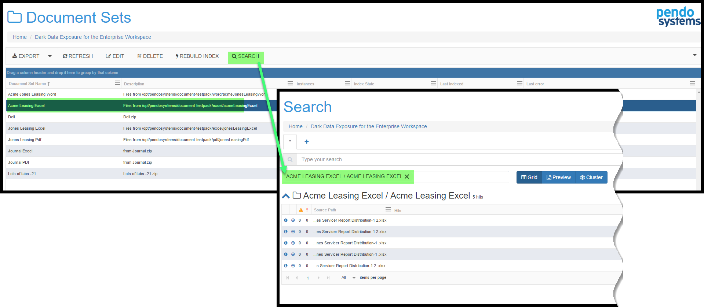
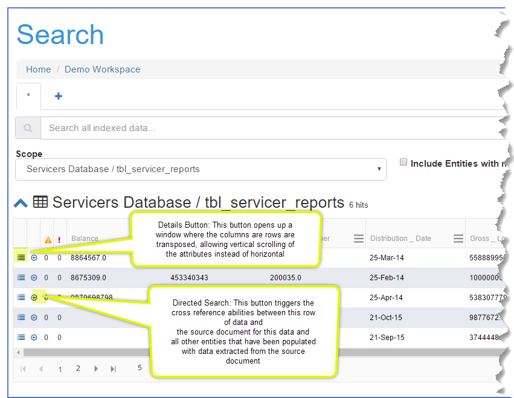

Detailed TOC for Unified Search
Unified Search
Usage
As soon as you Import any Entities and/or Document Sets, the Pendo Platform creates Metadata and all the data is Indexed. The Indexing allows for several features of the Pendo Platform to be realized, including full-text searches. This means you can search for words or phrases as if all your varied databases and documents were all one big source of data. You search the data using simple terms such as names or identifiers and the Pendo Platform will find all occurrences across all of the Indexed data. More complex searches can be done. The following sections detail examples of how you can use the Unified Search box.
There are different types of searches:
1. 'All-Inclusive’ search – the default search will take your search string and look at all indices, including the indices from all Entities, Document Sets and Document Classes.
2. ‘Focused Search’ – the search will take place looking through any user selected indices. Please see Focusing a Search below.
Search Screen Functional Areas
There are several parts to a search results screen.
1. Each new search will open a tab here, allowing you to move around to any search you have made in the session or to close and search you no longer need.
2. Enter your search string here. There are more details on your syntax options below.
3. Focus your search here. The default is to search everything on the Pendo Platform, however you may elect to narrow the search. Please see Focusing a Search below.
3. Results Areas. Here you will see a list of items in the index that had a match on the search string. The chevron allows you to open/collapse the result set for the index for that particular Entity or Document Set. The symbol to the right of the chevron indicates the type of source; Entity or Document Set.
4. These three icons are options that you may select for viewing the result sets. Please see below for further details in Document Set Search Results Areas.
5. There are one or two buttons here.
The search screen for a Source Entity has a button that toggles the column header between ‘API Name’ and ‘Full Name’.

The Export icon exports the contents of the grid to the Files and Folders into a folder called Exports. You will have the chance to accept or rename the file being created. To get this file onto your PC, you will to go to Files and Folders, open the Exports folder, highlight the files and click the 'Download' option. There is no limit to the number of rows that will be available to you. Older releases had a 10,000 row limit. Please see Download a File for more details.
Results Area Options [#results-options]
Clicking on the chevron on the far left opens up details of the findings for each item. Your screen options depend on the type of source you are looking at.
Database Search Results Area
Search Screen Main Areas
There are 4 areas highlighted below.
1. The icon in the first column will popup a Detail View of that record. The next two icons indicate if there was a Warning or Error that occurred during the processing of that row.
Hint: if you want to find all the rows with errors or warning even though you can only see a maximum of 50 rows at a time, you can do a special search of hasWarning:true OR hasErrors:true. The details of any error or warning can be found in the Detail View.

2. Follow the data function: when you hover your mouse over any row in any column of an Entity results set, it becomes underlined. Clicking will result in a new search of whatever words were underlined.
3. Here you see one or both of the following icons.
The Export cloud icon with the arrow exports the contents of the grid to the Files and Folders into a folder called Exports. You will have the chance to accept or rename the file being created. To get this file onto your PC, you will to go to Files and Folders, open the Exports folder, highlight the files and click the 'Download' option. There is no limit to the number of rows that will be available to you. Older releases had a 10,000 row limit. Please see Download a File for more details.
The other button toggles the column header between raw API Name and the more user friendly Name. Name will still display the API Name if a more friendly name has not been entered by editing the Entity, which can be done any time the user desires.
4. The area at the bottom of the grid allows you to page thru the result set. The default number of rows displayed is 10, but you may select 10, 20 or 50 rows. Hint: remember that despite the fact you are seeing a specified number of rows, if you sort a column you are sorting against the entire result set, not just what you are seeing.
Document Set Search Results Areas
While the search result area is similar to what is described above, there are several differences.
Download Buttons
View Types
You will see three options to display the search results.
From left to right, they are:
Grid - This shows each file's ‘Source Path’ which shows the full path and filename of the document as well a column called ‘Hits’ which highlights all the search hits within the document.
Preview - This shows you an image of the original document, letting you scroll thru the file. This feature is used only for OCR'ed document sets when the option 'Save Full Pages as Images' was selected.
Cluster - shows the relative number of hits in your Document Set via different sized bubbles. Clicking the Word in a bubble will take you to a search that has that word. Clicking inside the bubble but not on the word shows a few data points. The use of this view will evolved over time.
There are several sub-options for Clustering of data hits:
- Documents MIME Type - breaks out the number of each type of document in the selected Document Sets.
- Source Path - all of the words in the source path are clustered. Usefulness yet to be determined.
- Document State - indicates if the documents are indexed or not
- With Errors - are there errors in a Document Class that has been run on the Document set?
- With Warnings - are there warnings in a Document Class that has been run on the Document set?
- Keywords - NOTE: only available if the 'Simple Keyword Feature Plugin' has been used. You can always add this feature in via editing a Document Set, clicking on the Indexing Plugin tab, selecting the Simple Keyword plugin and adding whatever keywords you wish. Keywords/phrases can be entered that pertain to the contents of various Document Sets. This will display the number of hits of each keyword.
- Lines (terms)- relative number of times each word appears
- Cell Values - if you have elected to extract text references in the Excel plugin, the test contents of all the cell are clustered
- Cell References - cell references in the spreadsheets are clustered.
After the first search - how to do more searches
Once you have done the first search, you can initiate a new search in three ways:
- Enter a new search string, replacing the current search.
- Click on the + and enter a new search string.
- ‘Follow the data’ by clicking on almost anything you see.
Examples of Search Syntax
There are many types of searches supported. Here are some quick examples.
Here is the syntax supported by the PD3P Search Engine.
Wildcard Searches
Both single and multiple character wildcard searches within single words is supported. .
- To perform a single character wildcard search use the "?" symbol.
- To perform a multiple character wildcard search use the "*" symbol.
- The single character wildcard search looks for terms that match that with the single character replaced.
For example, to search for "text" or "test" you can use the search:"te?t"
Multiple character wildcard searches looks for 0 or more characters. For example, to search for test, tests or tester, you can use the search: test*
You can also use the wildcard searches in the middle of a term: "te*t"
Note: You cannot use a * or ? symbol as the first character of a search.
Regular Expression Searches
Regular expression searches matching a pattern between forward slashes "/". The syntax may change across releases, but the current supported syntax is documented in the RegEx class. For example to find documents containing "moat" or "boat": /[mb]oat/
For more information, please go to Regular Expression Reference Page for all available syntax options. This is a very feature rich syntax. Please be sure to select Java as the flavor of RegEx.
Fuzzy Searches
Fuzzy searches based on Damerau-Levenshtein Distance. To do a fuzzy search use the tilde, "~", symbol at the end of a single word term. For example to search for a term similar in spelling to "roam" use the fuzzy search: "roam~". This search will find terms like foam and roams.
An additional (optional) parameter can specify the maximum number of edits allowed. The value is between 0 and 2, For example: roam~1
The default that is used if the parameter is not given is 2 edit distances.
Proximity Searches
Finding words are a within a specific distance away. To do a proximity search use the tilde, "~", symbol at the end of a Phrase. For example to search for the words “loan" and "bank" to be within 5 words of each other in a document use the search: "loan bank"~5.
Boolean Operators
Boolean operators allow terms to be combined through logic operators. Supported Boolean operators are AND, "+", OR, NOT and "-". (Note: Boolean operators must be ALL CAPS).
OR
The OR operator is the default conjunction operator. This means that if there is no Boolean operator between two terms, the OR operator is used. The OR operator links two terms and finds a matching document if either of the terms exist in a document. This is equivalent to a union using sets. The symbol || can be used in place of the word OR.
To search for documents that contain either "bank of america" or just "bofa" use the query:
"bank of america" bofa
or
"bank of america" OR bofa
AND
The AND operator matches documents where both terms exist anywhere in the text of a single document. This is equivalent to an intersection using sets. The symbol && can be used in place of the word AND.
To search for documents that contain "bad" and "student loan" use the query:
"bad" AND "student loan"
+
The "+" or required operator requires that the term after the "+" symbol exist somewhere in the field of a single document.
To search for documents that must contain "student loan" and may contain "bad" use the query:
+”student loan” bad
NOT
The NOT operator excludes documents that contain the term after NOT. This is equivalent to a difference using sets. The symbol ! can be used in place of the word NOT.
To search for documents that contain "loan" but not "mortgage" use the query:
"loan" NOT "mortgage"
Note: The NOT operator cannot be used with just one term. For example, the following search will return no results:
NOT mortgage
-
The "-" or prohibit operator excludes documents that contain the term after the "-" symbol.
To search for documents that contain "student loan" but not "home loan" use the query:
"student loan" -"home loan"
Grouping
Supports using parentheses to group clauses to form sub queries. This can be very useful if you want to control the boolean logic for a query.
To search for either "student" or "home" and "loan" use the query:
(student OR home) AND loan
Field Grouping
Supports using parentheses to group multiple clauses to a single field.
To search for a title that contains both the word "return" and the phrase "pink panther" use the query:
title:(+return +"pink panther")
Escaping Special Characters
The PD3P supports escaping special characters that are part of the query syntax. The current list special characters are
- && || ! ( ) { } [ ] ^ " ~ * ? : \ /
To escape these character use the \ before the character. For example to search for (1+1):2 use the query: \(1+1\)\:2 because the parentheses and the colon are special characters.
Advanced Searches
Beyond Google-like searches across all the data in your Workspace, there are several advanced search methods:
- Focusing a search to a specific object such as an Entity or a Document Set.
- Focusing a Search to a specific Attribute.
- Focusing a Search to a Warning or Error condition
- Taking advantage of cross-referencing abilities between a specified Target Entity, Source Documents and all Target Entities that have had data extracted from a Document Set.
Focusing a Search
After doing a general search across all data, putting a filter, or scope in place is easy.
Note the "Scope" section of the screen highlighted below. When the scope box is empty, using all sources is the default behavior.
Just click in the scope box to see a list of all Entities and Document Sets that are in your Workspace and select one of them. This limits your search to the item or items selected.
You may continue to click in the scope box to select as many items as you wish as seen below. Just select whatever you wish in the 'Select Indices' drop-down' as seen in 'Area 1' below. When you are done selecting the scope, move your cursor up to the search text box, 'Area 2' below, and press Enter to re-invoke the search with the new scope.
Another way to focus a search is automatic. From within any of the Components that have a Search option, clicking the Search button will automatically invoke the Unified Search with a context-sensitive Scope already in place.

Limiting the Scope of a Search to a specific Attribute
You may wish to restrict the Scope of a search to a specific Attribute Name. This can be done by following this layout in the search box: attribute api name: search syntax. Note that nothing is case-sensitive.
For example, you could type
city:"new york"
and produce a result set as shown below. NOTE: If more than one Entity has the same field name, they would all be displayed.

Note the difference between just entering
"new york"
and entering
city:"new york"
- Entering just "new york" would return a hit no matter what field 'new york' was found in.
- Entering city:"new york" would return results only when the phrase "new york" is in an Attribute with the exact name of city.
Limiting the Scope of a Search to a Warning or Error condition
You can search for Warnings or Errors. Sometimes, when a Document Set data is Indexed, or when a Document Class is attached there is an issue. There may be a warning or error generated by the Platform. Such errors can occur when a file being indexed is corrupt, not eligible for the selected Plugin or when there was an error in a manually entered Python, Groovy, RegEX or other script. The Pendo Platform is designed to note the error and continue Indexing. You may enter either of the specialized search strings ‘hasWarning:true’ or ‘hasErrors:true’ without the quotes. If you want both in a single search, just enter 'hasErrors:true OR hasWarnings:true'without the quotes. If there are Warnings or Errors you will get results and can act on them.
Alternatively, you may make use of Cluster View options as shown below. Click on the word True or False to see where the issues are or are not present
Specific Target Entity -> Source Documents -> Target Entities involved in Document Class
When searching an Entity Type= Target, the Platform has extensive cross-referencing, allowing you to easily move from viewing any row in Target Entity to being able to download the Source Document to being able to see all Classifications in which the Source Document is participating.
Doing a Search on a Target Entity would show a screen like this:
The Details and Directed Search buttons are located toward the left side of the Entity Grid.

The Details Button
This invokes a popup with several tabs.
- Parsed Content gives a representation of the original documents as the Platform Index interpreted it during import. The visualization will look very similar to the original document without any format related information (font, size, color, bold, etc.). This screen will look like an Excel spreadsheet if the original document was a spreadsheet, Like a Word document if the original document was a Word files, etc.
- Metadata gives the platform's stored metadata about the file in question. There is Platform generated 'File Metadata', and, if elected during the plugin selections, 'Extracted Metadata' from the source such as Author, Date Created, Last Updated and so on.
- Raw shows the information stored in the index. This can be very useful for technical people when making a Document Class.
- Features give specialized input provided to certain Plugins such as the Keyword plugin.
Warning and Errors would show warnings or errors that occurred during import or indexing of this file.
Technical give some technical information about the file.
The Directed Search Button
Doing a Search on a Target Entity would show a screen like this:
Clicking the Directed Search button the first time takes you Search which show the Source Document - which can be downloaded by clicking the right-most icon. If the Directed Search button is clicked again, the Search returns all Target Entities into which the data from the Source Document has been extracted via a Document Class Attach.